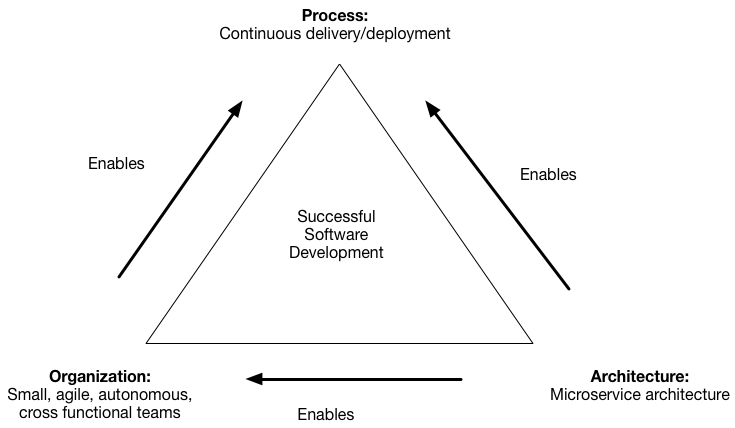

背景
你正在开发一个巨大而复杂的应用，并且想使用微服务架构。微服务架构将以一组松耦合服务的方式构建一个应用。微服务架构的目标是通过持续集成和持续部署的方式加速软件开发。

微服务架构通过两种方式达到加速软件开发的目的：
- 简化测试流程并且独立地启动和部署组件
- 将开发团队组织为一系列小的(6-10人)、原子性的团队，每个团队只负责开发一个或多个服务
但是这些益处不是一使用微服务架构就有的，相反，只有仔细地将应用按照业务能力解耦到各个服务中，微服务架构才能真正发挥出它应有的力量。
一个微服务必须微小到一个小团队就足以进行开发，并且可以比较容易地进行测试。这里有一条来自面向对象思想的参考原则：单一职责原则(Single Responsibility Principle, SRP)。单一职责原则将一个类(class)的“职责”定义为改变它的理由，并且指出一个类应只有一个需要被修改的理由（译者注：如果一个类具有多个不同的职责，那么就会有多个不同的原因使程序员修改这个类，而这种修改将影响到该类不同职责的使用者）。将单一职责原则原则应用于微服务设计，以此设计出高聚合的、实现少量紧密功能的微服务同样很有意义。
一个应用还能够通过另一种解耦方式进行解耦，这种方式使大多数新需求或修改只影响一个单独的微服务。因为影响多个微服务的修改需要在多个团队中进行协调，这显然会拖慢开发进度。这种解耦方式同样来自面向对象思想，叫做共同封闭原则(Common Closure Principle, CCP)。共同封闭原则要求将那些会因为同一种原因进行修改的类放在一个包里。例如，两个类实现了同一业务规则的不同方面而被放在一个包内。共同封闭原则的目标是当业务规则发生变化时，只需要修改很少量的代码——理想情况是只需要修改一个包内的代码。这种思想在微服务设计中同样有益，因为它保证了所有的修改只会影响一个微服务。
问题
如何将应用解耦到微服务中？
需求
- 架构必须稳定
- 微服务必须是高聚合的。一个微服务应该只实现一小部分紧密相关的功能
- 微服务必须符合共同封闭原则——将那些会因为同一种原因进行修改的类放在一个包里——以保证所有的修改只会影响一个微服务
- 微服务之间必须是松耦合的——每个微服务都作为封装其实现的API。它封装的实现能在不影响用户的情况下进行改变
- 单个微服务必须是可测试的
- 每个微服务必须小到能由一个6-10人团队完成开发
- 负责开发一个或几个微服务每个开发团队必须是原子性的。一个团队必须能在与其他团队保持最少合作的情况下完成开发
方案
根据业务能力定义微服务
相关模式
根据领域的子域拆分是一种替代方案